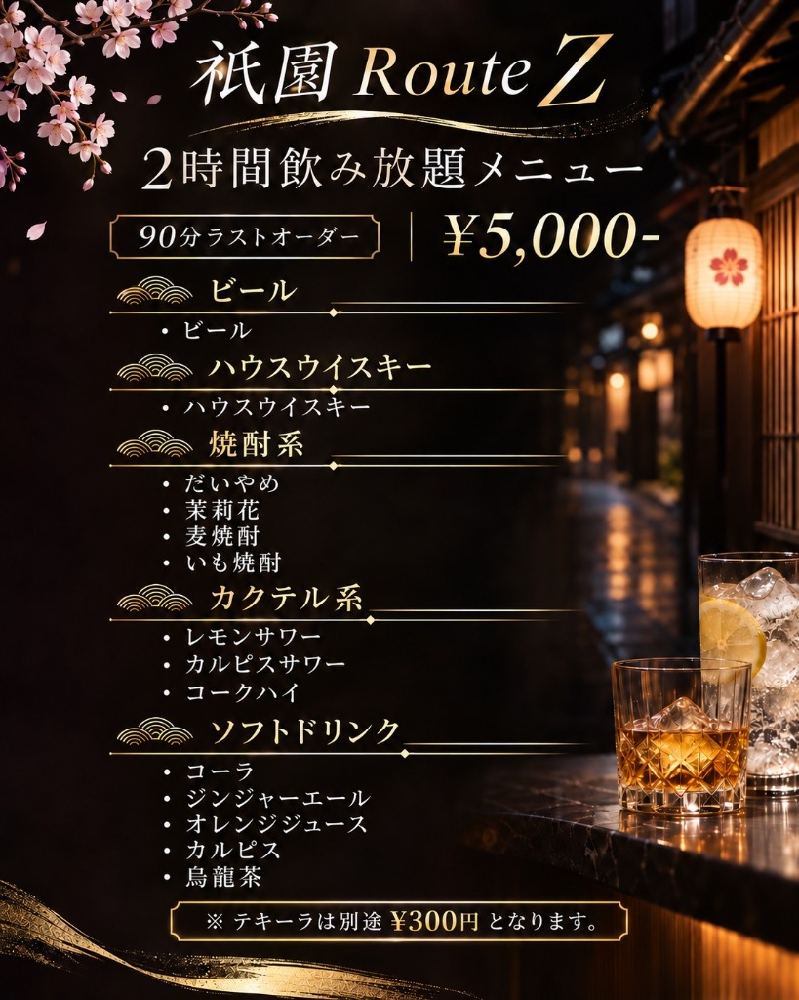

「忘年会や結婚式二次会で、周りに気兼ねなくカラオケで盛り上がりたい」
「祇園のバーは高そう…幹事として予算オーバーが怖い」
そんな幹事様の理想をすべて叶えるのが、八坂神社すぐ・円山ビル4Fの「祇園の隠れ家Bar Route Z」です。プライベート感あふれる空間を丸ごと貸し切り、祇園エリア屈指の明朗会計でおもてなしいたします。
2時間飲み放題メニュー（90分ラストオーダー）¥5,000-

生ビール・ハウスウイスキー・本格焼酎（だいやめ、茉莉花、麦、芋）・各種サワー・ソフトドリンクがすべて飲み放題！テキーラショット（¥300）も別途ご注文いただけます。
1. 幹事様がBar Route Zの貸切を選ぶ「5つの決定打」
① 8名〜15名様の「ちょうどいいサイズ感」で完全フロア貸切
「大型宴会場だとスカスカになって盛り上がらない」「カウンターだけの店だと全員で話せない」という悩みを解決。落ち着きのあるBOXソファー席とカウンターを完備し、全員の顔が見渡せる一体感抜群の貸切パーティーが実現します。
② 祇園で奇跡の「1名5,000円ポッキリ」明朗会計
通常チャージ料（¥1,500）込み、カラオケ歌い放題込み、税込みでジャスト5,000円！サービス料や深夜料金の加算は一切ありません。集金がぴったり計算でき、予算オーバーの不安がゼロです。
③ 最新カラオケ歌い放題で他のお客様を気にせず熱唱！
完全フロア貸切のため、カラオケの選曲も自由自在。会社の忘年会での余興、仲間内での懐メロ大会、結婚式二次会のサプライズ動画上映など、プライベートな盛り上がりを心ゆくまで楽しめます。
④ 充実のドリンクメニュー＆プレミアムウイスキー（別注可）
飲み放題メニューには、ビールやサワーだけでなく、女性や若い世代にも大人気の「ライチのような香りの芋焼酎・だいやめ」や「茉莉花（ジャスミン）」をラインナップ。さらに別注で山崎・白州などの希少ジャパニーズウイスキーのショット注文も可能です。
⑤ ケーキ・おつまみのお持ち込み相談OK！
お誕生日のお祝いケーキや、一次会のお気に入りおつまみの持ち込みも事前にご相談いただければ無料でOK。柔軟にお客様のご希望に寄り添います。
2. 主なご利用シーン
🍺 忘年会・新年会の二次会・三次会
一次会で食事を楽しんだ後、同じメンバーだけでゆっくりお酒とカラオケを楽しむ大人の二次会に最適。
💍 結婚式・披露宴の二次会・アフター
新郎新婦の親しい友人たちだけで祇園の夜をゆったり過ごすアットホームなアフターパーティーに。
🎂 誕生日会・記念日・女子会
ケーキの持ち込みやサプライズ演出も可能。隠れ家のようなシックなバー空間で特別な夜を。
💼 飲食店・クラブ・サロンの打ち上げ
深夜20:00〜営業のため、近隣の祇園・木屋町エリアの同業者様の深夜打ち上げやイベント後にも。
週末や年末は予約が集中します。お早めにお問い合わせください。
公式LINEから下記の項目をコピーして送信いただくだけで、空き状況と概算見積もりを最短即時でご案内いたします。
・希望日：〇月〇日（〇）
・開始時間：〇〇:〇〇〜（2時間）
・予定人数：約〇名
・利用用途：忘年会／二次会／誕生日など
・持込・ご要望：ケーキ持込希望など
3. 店舗アクセス・営業案内
- 店名
- 祇園の隠れ家Bar Route Z（ルートゼット）
- 住所
- 〒605-0062 京都府京都市東山区林下町422 円山ビル4F（八坂神社すぐ・円山公園隣）
- アクセス
- 京阪「祇園四条駅」徒歩8分 / 地下鉄東西線「東山駅」徒歩7分
- 営業時間
- 20:00 〜 翌3:00（Last / 深夜営業）
- 定休日
- 不定休（貸切は年中無休で柔軟にご相談承ります）
- 決済方法
- 現金・各種クレジットカード（VISA/Master/JCB/AMEX/Diners/銀聯）・交通系IC・iD・QUICPay・PayPay・d払い・au PAY・楽天ペイ（領収書発行）